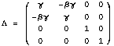
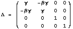

For Folks
It takes a few minutes for light to get to Mercury from Earth, but it takes a little longer due to the Sun.
Radar signals from the Haystack Observatory in Westford Massachusetts were sent out into space to bounce off Mercury. The time the radar signals spent flying between the two planets was carefully measured. As the radar's path in space moved closer to the Sun, a small time delay grew in the radar reflections which is given by equations in the big, black book (Gravitation, by Misner, Thorne and Wheeler).
Written in chalk is the artist's method to calculate the time delay. The tools used come directly from quantum mechanics which is not supposed to be an aid for such a calculation. Yet the results are the same (equation 40.13).
For Nerds
Irwin I. Shapiro measured the time delay of radar reflections off Mercury caused by the gravitational field of the Sun. The logarithmic dependence on the impact parameter confirmed general relativity's prediction. The Lorentz group will be employed for a similar end.
The gravitational fields for a bound test mass are characterized
by a member of the Lorentz group in the following manner: take the Newtonian
orbital velocity, ,express it relativistically,
,express it relativistically, and
and  , and use , a member of the
Lorentz group.
, and use , a member of the
Lorentz group.
The experiment is about the time delay created by the presence of the Sun's gravitational field. With the Sun, the field along the line of flight is characterized by the escape Lorentz matrix where the distance is (x^2 + b^2)^1/2. Without the Sun, the identity matrix characterizes empty space. Integrate the trace of the difference between the two matrices over the path from Earth to Mercury. This gives the correct algebraic result.